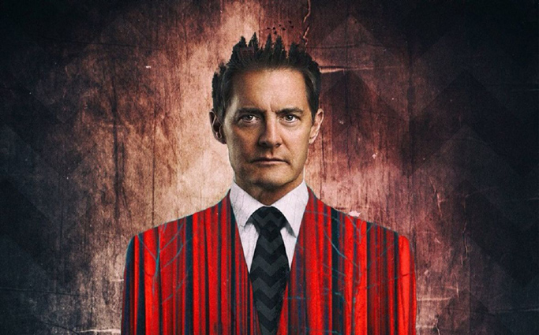 |
THE RETURN - ANALYSIS |
At a certain point in the finale to Twin Peaks: The Return, Agent Cooper is talking to Laura Palmer in an alternate timeline (or dimension, or possibly a dream - they both have different names). Anyway, Laura asks, reasonably enough, "What's going on?" To which Cooper responds, "It's difficult to explain." Coop's not wrong but we've never been ones to let a complete lack of narrative coherence deter, so bear with us as 'Empire' rushes in where Cooper feared to tread and attempts to explain exactly what happened in the demented mind-scramble that was Twin Peaks: The Return. Spoiler alert: the 'plot' of the series (as far as one can be said to exist) will be thoroughly spoiled below. You have been warned. |
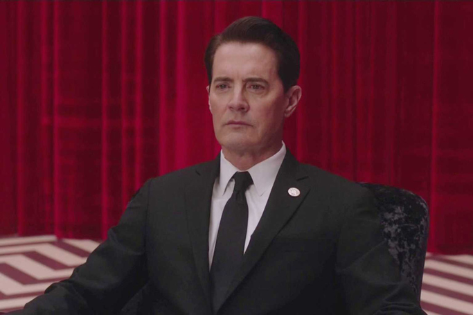 |
What on Earth was the plot? |
Well, there seem to be three main plotlines. In the first, Dale Cooper has to escape the Black Lodge, where he's been trapped for twenty-five years, fully reawaken in what we think is the 'real' world - in Las Vegas - and then return to the show's eponymous town. As Showtime's David Nevins said before the series aired, "The core of it is Agent Cooper's odyssey back to Twin Peaks." Of course, every odyssey needs a thwarting villain and Cooper's main one is his shadow self - Bad Cooper. Bad Cooper sends waves of killers to despatch Good Cooper once he's out of the Lodge, making the whole endeavour more difficult. The second thread concerns Major Briggs, Gordon Cole and Cooper's secret scheme to fight what we might loosely call the Black Lodge, i.e. the forces of evil. Or, more specifically, 'Judy', an uber-demon who also owns a diner in Odessa. The third and final plotline takes us back to where the entire series started: the murder of Laura Palmer. As in Twin Peaks: Fire Walk with Me, the focus has shifted from finding out who killed Laura Palmer, to saving her from being murdered in the first place. |
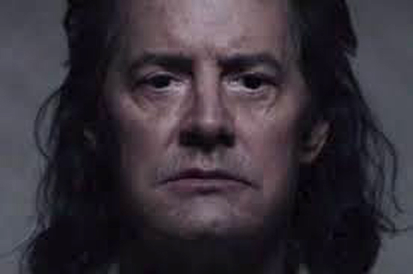 |
Who is Bad Cooper, exactly? |
At the end of series two, Cooper was bested by an evil inhabiting spirit, BOB, who had killed Laura Palmer while in possession of her father, Leland. The final episode closed with a maniacal Cooper doppelgänger smashing his head into a mirror and asking sarcastically "How's Annie?" This is Bad Cooper, or more accurately, BOB/Cooper. BOB/Cooper is different from BOB/Leland. This BOB doesn't live a dual life, with a job, family, etc, he's a full-on ne'er-do-well: a super-villain, of sorts. Why? Most likely because the Leland BOB inhabited was actually Leland, while the Cooper BOB is inhabiting isn't actually Agent Cooper at all but rather an artificial simulacrum. |
A what? |
A doppelgänger, made to look exactly like our Coop. BOB is perfectly happy inside Doppelgänger Cooper and doesn't want to return to the Lodge, which seems to be breaking some sort of house rules. He has clearly been preparing for Good Cooper's return, and any attempt to banish him back to the land of red velvet curtains and parquet flooring.
|
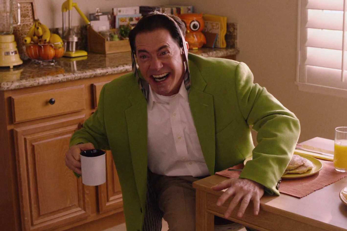 |
So who's Dougie, then? |
Douglas 'Dougie' Jones is a copy of Cooper, apparently made by BOB/Cooper as a ploy to confuse his adversaries (and us, apparently). Good Cooper takes over his life when he escapes from the Black Lodge, while Dougie is recalled to the Lodge and destroyed. They call these copies 'tulpas'. There seem to be a lot of them about, and Good Cooper arranges with MIKE, the one-armed man, to make another Dougie as a replacement for Dougie's family after he's gone. This new tulpa is whipped up using Cooper's hair and so is probably more benign and reliable than the rackety gambler and womaniser created by Bad Cooper. Still with us? |
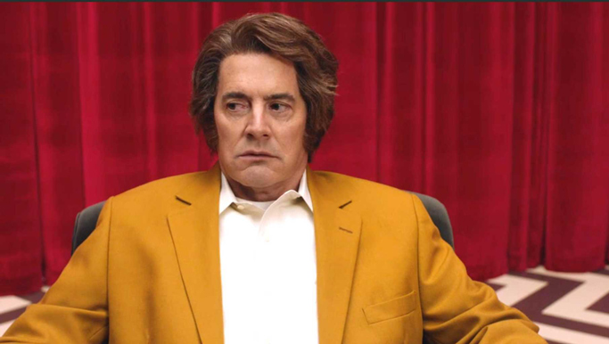 |
| So a tulpa is the same as a doppelgänger? |
We can see why you'd think that but… no. Tulpas are manufactured people, and seem to always be copies. They have their own personalities, albeit influenced by their originals/creators, and are "made for a purpose", apparently from golden seeds. The concept is Tibetan, if interpreted pretty loosely - Lynch loves mystical Tibetan notions. The Diane who appears for most of the series is a tulpa, made by BOB/Cooper. Doppelgängers seem to be shadow selves dwelling in the Black Lodge. Hence they are not manufactured and are an evil force in their own right. The Cooper that BOB dwells in is Cooper's doppelgänger, i.e. evil twin. In the Lodge, doppelgängers have white irises, while outside their irises are black. Sidenote: tulpas are the origin of the blue rose motif. In an old FBI case, one identical woman shot another, who said "I am like the blue rose," before dying and then disappearing. After being told this story by Albert, Agent Tamara "Tammy" Preston deduced the link: "The dying woman was not natural, conjured" - like a blue rose - "What's the word? A tulpa." Thus did the Blue Rose Task Force get its name. |
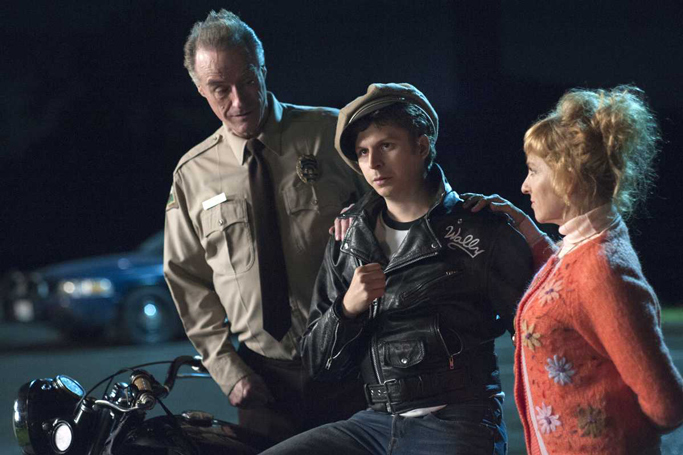 |
| What about the children? |
| Some of the original Twin Peaks characters have been reproducing in more traditional ways, i.e. having children. Why are they all unlikeable and self-destructive idiots? Possibly because of the way series two ended, with the Black Lodge becoming ascendant. In fact, Twin Peaks as a whole seems bleak, diminished, lacking in colour and cheer, and this may all be related. |
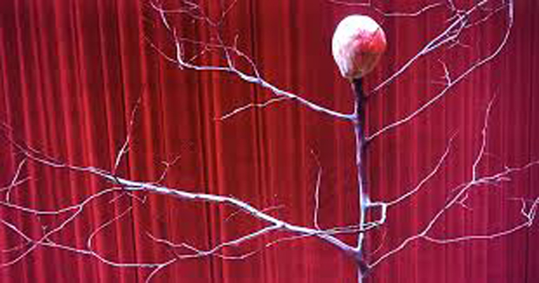 |
| What's up with the talking brain tree? |
| Remember The Man From Another Place (aka the Arm) from the first two series? The nifty dancer and backwards-speaking gent from the Lodges was a crony of MIKE, the one-armed man. Possibly actually MIKE's missing arm, literally and/or in some other sense. Best not to dwell too much on that point. Well, he's an electric tree with a whispering blob-head on top of it in The Return. When asked about this, Lynch simply said that, "Necessity is the mother of invention." This, presumably, is Lynchian for the fact that Michael J Anderson, who played TMFAP in the original series, didn't come back for the third, so some kind of sidestep was required. Naturally, the solution was an electrified ficas. Similarly, Frank Silva, who played BOB, died in 1995, so appears here as a composited head on a floating orb, while Michael Ontkean, who played Sherriff Harry S. Truman, wasn't brought back and so was absent offstage with some nameless illness. A certain amount of weirdness is probably just there to cover for gaps. The Arm, by the way, whether human or in electro-arboreal form, is a source of information for Cooper, even if he's more than a little ambiguous. How can you tell when a tree means well? |
| Who is Mother? |
| Good Cooper is warned against 'Mother' as he is trying to exit the Lodge, and given the violent banging noises she makes when outside the door, it's probably good advice. Mother made a strong impression on viewers and there's been a lot of speculation on who or what she is. Judy? Sarah Palmer? |
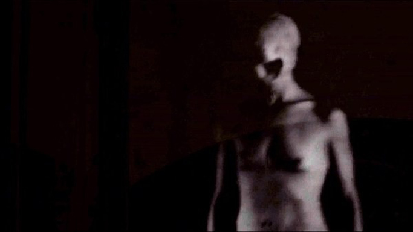 |
| The deadly entity in the glass box? The thing that's behind it all? |
All of the above? Who the hell even knows. Let's talk about the glass box - what's all that about? An unnamed billionaire is paying people to watch an empty glass box at a secure location in New York. While the watcher is distracted, Good Cooper appears in it, seemingly as he leaves the Black Lodge. The watcher then allows an insistent lady visitor in when the security guard is mysteriously absent - it feels like a plot - and when they become, shall we say, 'romantically distracted', another entity manifests and butchers them horribly. The box obviously relates to the world of the Lodges, but who is funding the watching? And what manner of entity is the mid-shag murderer? That part's never made clear. Theories include Bad Cooper or Audrey Horne being the funders, while the entity is said to be BOB, Judy, 'Mother' from the Lodge, or even Sarah Palmer - and none of these options are necessarily mutually exclusive. It's worth remembering that Sarah Palmer, BOB and the Woodsmen have all shown themselves capable of butchering people without the need for weapons. |
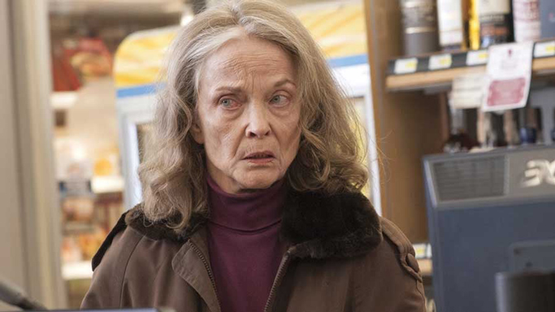 |
| So… Sarah Palmer. She should probably see a doctor, right? |
Even when she was a mourning mother in the first two series, there was an unsettling quality about Sarah Palmer and she seemed to have some sort of psychic ability. Now she's frankly terrifying. Her watching of the same boxing clip over and over; her taste for violent animal documentaries; her solitary drinking; her prophesying to fearful grocery store clerks; this was all playful by comparison to the way she dealt with a menacing hillbilly in a bar. First opening her face to reveal limitless darkness within, she then slashed his throat. The way she feigned innocent shock and then coldly dismissed the bar owner's suspicions was pretty chilling, too. Mrs Palmer is the prime candidate to be the girl who swallowed the insect–reptile in episode eight. This would explain a few things. It's tempting to identify her as Mother, too, especially given that she's Laura Palmer's mother, but … who can really say? Suffice it to say, if you thought Sarah was the most terrifying thing in Twin Peaks: The Return then you're in good company. |
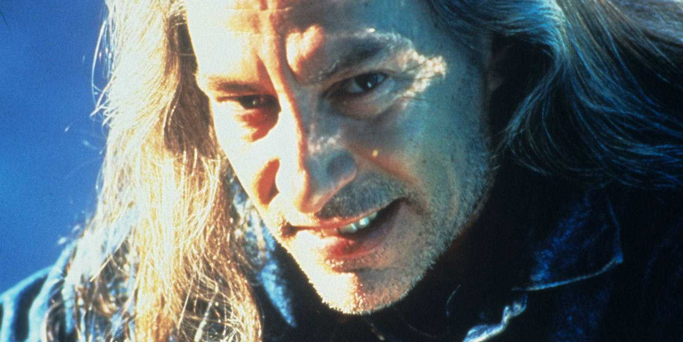 |
| Did BOB come from an atom bomb? |
In the famous/notorious über-odd episode eight, we see a lot of the Trinity nuclear test that took place in 1945 as part of the Manhattan Project. BOB's birth seems to follow on from this in a process that's sort of enigmatically disgusting. Is it Mother giving birth to him, and/or the pale and murderous entity from the glass box? Possibly. The explosion also seems to agitate, arouse, enthuse or energise the Woodsmen who live above the convenience store: the gents we first see in Fire Walk with Me. We don't think it creates them, but anything's possible. |
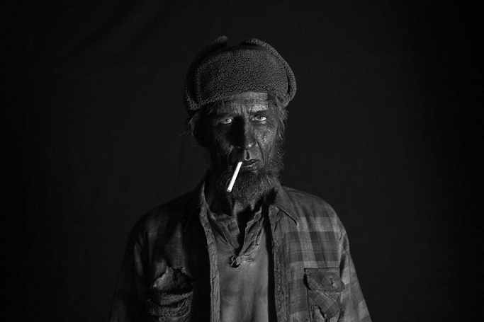 |
| Speaking of the Woodsmen, who are they and what do they want? |
In Fire Walk with Me, Phillip Jeffries reveals that he's on to something: "I've been to one of their meetings. It was above a convenience store… We live inside a dream". On screen we see BOB and other recognisable Black Lodge favourites, together with a couple of hobo-looking men. We're left to assume that this is a sort of Lodge meeting, like the Masons have, but a little more demented (and dangerous). Well, those hobos (increased in number) become the Woodsmen in The Return, where they play a larger role. What exactly that is is hard to say, but you could say that they are enablers; in some of the most powerful scenes they anoint Bad Cooper in his own blood to restore him after death, while they seem to have a relationship with BOB. Are they servants, masters, allies, or something else? We don't know. What we do know is that at least one of them has a big part to play in one of the most unsettling scenes of the series. In episode eight, a Woodsman walks into town, endlessly repeating his catchphrase "Got a light? Got a light?" with an unlit cigarette hanging from his mouth - possibly echoing BOB's question to the young Leland Palmer: "Do you want to play with fire, little boy?" Townsfolk are understandably concerned and repelled by his angular, soot-blackened face and bright, eager eyes, together with his monomaniacal question. They're right to be because he then enters the radio station and crushes two people's skulls with his bare hands, slowly, and almost absent-mindedly. While there he broadcasts a chant, or incantation: "This is the water, and this is the well. Drink full, and descend. The horse is the white of the eyes, and dark within." The townsfolk fall asleep as they listen, and then an insect–reptile creature that had been creeping across the desert makes its way into a sleeping young woman's house and then into her mouth and further down. The implication is that this is what the Woodsman (and Woodsmen) want. We don't know exactly what this means, but it feels like an evil nativity, with a creature of unspeakable evil being placed within a mortal woman, in which case the Woodsmen may be malignant 'angels' of a sort, or at least messengers and agents of primordial evil. Is the young woman with the creature inside Sarah Palmer? It's possible. The dates would work. Does your head hurt yet? |
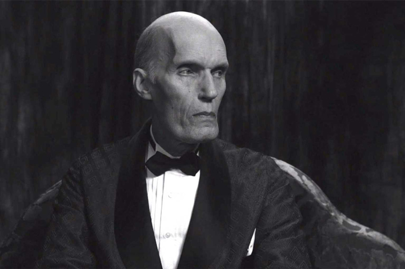 |
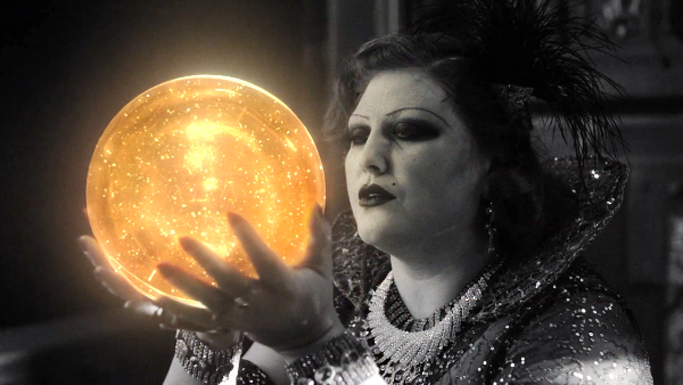 |
| Who are the Fireman and Senorita Dido? |
The Fireman is the Giant from the original series, Agent Cooper's benign supernatural ally from the White Lodge. Presumably he is called the Fireman because he'd like to put out BOB and the woodsmen's fire. Of course, fire and evil are linked throughout all three series, most explicitly by Margaret, the Log Lady, whose husband was killed by fire. In The Return the Fireman plots for good, and may be behind Good Cooper's luck in Las Vegas. Senorita Dido appeared to work with the Fireman to create Laura Palmer, kissing an orb bearing Laura's image before it was sent down to earth. Not much else is known about her. The Fireman dwells in a castle, which may be the White Lodge, but also looks like Lynch's dream home, with a sort of Never Never Land modern-antique cinematograph and aesthetics that cross Sunset Boulevard with Lynch's Dune. The Fireman floats around inside at some points like a spaceship going in to dock in 2001: A Space Odyssey. It doesn't make an awful lot of sense, but it sure is pretty. |
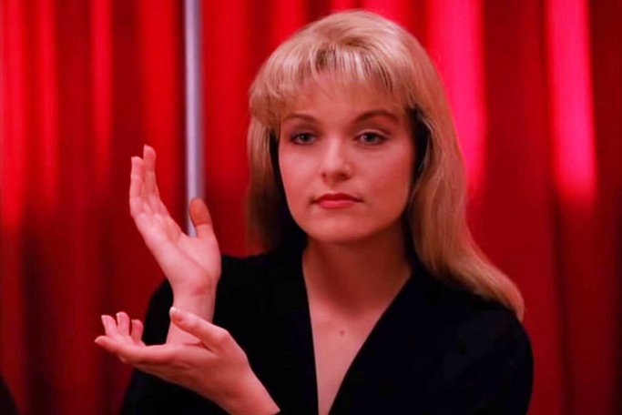 |
| Who, what and where is Laura Palmer? |
This is murkier than you might think. On the one hand, she's the high-school girl who was murdered, isn't she? Important but human. But then the Fireman and Senorita Dido sent a Laura orb to earth after the nuclear explosion and the inception of BOB, so is she a celestial being of some sort, an anti-BOB? In the original series, the Man from Another Place calls a Laura Palmer-looking character (i.e. played by Sheryl Lee) his cousin, and says, "Doesn't she look like Laura Palmer?" Could there be two Lauras? Then, in the finale, in Cooper's quest to save Laura he tracks her down in what may be an alternative timeline or dimension, the Black Lodge, or a dream*, as "Carrie Page". There are hints that she knows somewhere that she is Laura Palmer, but it doesn't help us nail down who she is. The question may not be "Who killed Laura Palmer?" as in the original series, but "Who, what and where is Laura Palmer?" [* There may be little or no difference between dreams, dimensions and lodges, of course.] |
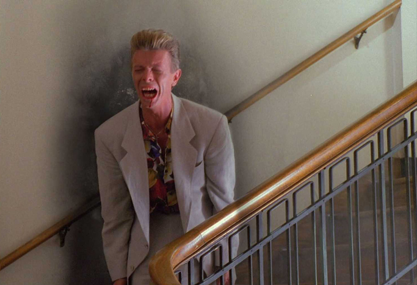 |
| Who and where is the long-lost Phillip Jeffries? |
| Jeffries was an early member the Blue Rose Task Force and, like most of them, he disappeared. Played by David Bowie, he had a memorable cameo in Fire Walk with Me - that became key to The Return. In FWWM he implied that he lived inside a dream, but in The Return he lives inside a sort of steaming hybrid iron lung/teapot at "the Dutchman's". It's likely only Major Briggs knows as much about the Lodges as Jeffries, but he isn't often available to speak. He sometimes uses a telephone. Necessity may in fact have been the mother of invention in this case as well, since Bowie died before The Return was filmed and was thus unable to reprise the role. |
| These folks have a bit of a thing for electricity, don't they? |
| Yes. It seems to be the medium for good and evil energy, and may have even greater significance. Note that Cooper wakened from his post-Lodge slumber by electrocuting himself, while he and Diane crossed over into Lodge territory in the finale at the site of a thick cluster of pylons. |
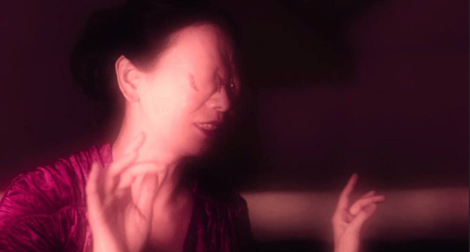 |
| Who is the eyeless woman who sounds like a bird? |
| Naido is her name and 'true' Diane is her nature - or so it seems. Naido appears to be Asian and her facial wounds seem to resemble those of Hiroshima/Nagasaki bomb victims, possibly continuing the theme of nuclear weapons. |
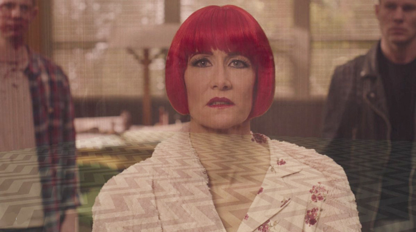 |
| True Diane? |
| Cooper's fabled Dictaphone assistant, Diane, from the original series turned out to be real (well, tulpa version aside) and important. In fact, it was a love affair of sorts. She could tell the real (good) Cooper from the (bad) doppelgänger, at least when kissing him. In a horrible and brilliantly acted scene, tulpa Diane reveals that Bad Cooper raped "her" (i.e. real Diane) and then took her to the Black Lodge, where she was imprisoned as Naido. BOB then made a Diane tulpa. In the finale Cooper helps to transform Naido back into Diane in the Twin Peaks sheriff's station. Obviously. |
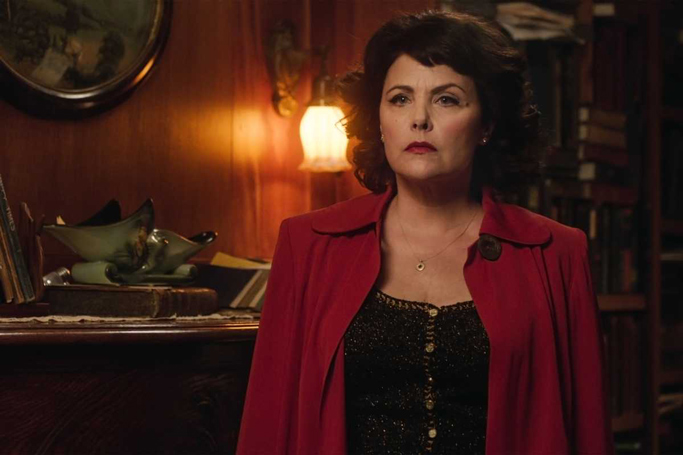 |
| Whatever became of Audrey Horne? |
| Viewers asked this in two ways. First, it was "What the hell happened to the effortless and artful Audrey? Why is she now so peevish and indecisive? And why is she being controlled in a weird passive-aggressive way by her husband? Also, why doesn't she ever go out or do anything? She just talks!" Then, it was "Oh, it's not quite real, is she still in a coma from the season two finale explosion, or is she in an asylum or a lodge?" In the scene that transformed our view of her, she was dancing in a self-possessed way like the old Audrey at the Roadhouse before being disturbed and abruptly waking up after saying, "Get me out of here" - only to be staring bleakly into a mirror in a brightly lit room with a white background. Anything is possible, but we suspect it isn't a twenty-five year coma, not least because in his Skype conversation with Sherriff Truman, Dr Hayward refers to it in the past tense. But why would Audrey be in an asylum or a Lodge? Well, in addition to having been blown up, it becomes clear that one of the more malignant human characters, Richard Horne, is Audrey's son, and that Bad Cooper is the father - we can only guess at the horror of how that happened. The colouring is wrong for the Black Lodge and, while it's possible that the Fireman or another White Lodge resident took pity on Audrey and brought her in for healing, it doesn't seem to be doing much to abate her private hell. Our money is on the asylum. |
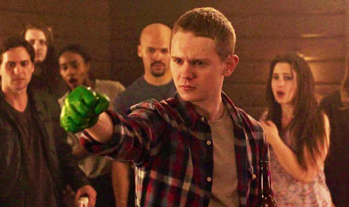 |
| Does Freddie Sykes have a magic hand? |
| Yes. The Fireman directed him to buy a packet of rubber gloves with only one glove in it, and after struggling with a jobsworth shopkeeper, he did. He was told he would perform a great deed with this glove of might, and he did, smashing BOB into fragments. |
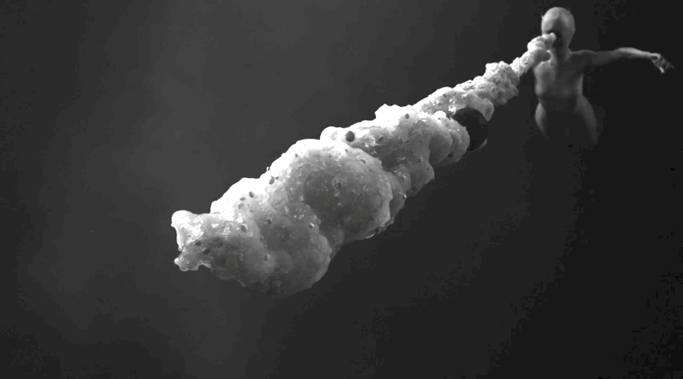 |
| Can we talk about Judy now? |
In the Phillip Jeffries' cameo in Fire Walk with Me, the first thing he says is "Well now, I'm not going to talk about Judy, in fact we're not going to talk about Judy at all, we're going to keep her out of it." We laughed and shrugged at the time, most of us assuming that it was just a touch of David Lynch enigma, and probably didn't mean anything. Perhaps it didn't - then. Now it does. Late on, Gordon Cole reveals something he'd kept secret even from trusty Albert: "Major Briggs shared with me and Cooper his discovery of an entity: an extreme negative force called in olden times Jiao Dai. Over time it's become Judy. Major Briggs, Cooper and I put together a plan that could lead us to Judy." This is what Cooper is after all along, and above all in the final episode. According to Twin Peaks WIKI, in Chinese "jiào dé" means 'screamed' or 'called out'. |
| Who are Linda and Richard? |
| In part one, the Fireman tells the captive Good Cooper, "Remember 4-3-0. Richard and Linda. Two birds with one stone." Cooper and Diane passed over into Judy's dimension (or something) after hitting the 430 mile mark, while "two birds with one stone" is the last thing Cooper said to Cole before he disappeared, probably referring to his dual mission. Finally, when Cooper awakes after a night of pretty uncomfortable-looking lovemaking with Diane, he finds she left him a letter, addressed to "Richard" and signed "Linda". The hotel and his car have also changed. Clearly he is in a different world of sorts. One in which Laura Palmer is called "Carrie Page"… |
| What about Chalfont and Tremond? |
| Keen Peaksians will remember these names from before. Wherever people with those names live, strange and terrible things happen. They're associated with the Black Lodge. So, right at the end when Cooper and Laura (Richard and Carrie) find that there's no Sarah Palmer at the old Palmer house, and that it's where Chalfonts and Tremonds live/have lived, it's more than ominous. Does it signify something about Sarah Palmer? Possibly, possibly not. Note, however, Sarah's behaviour in the finale, in which she tries to smash Laura's picture. |
| Is it all a dream? |
It might be. As Phillip Jeffries says, "We live inside a dream." Cooper echoes this at Twin Peaks sheriff's station before he sets out after Judy and to try to rescue Laura: "We live inside a dream. I hope I see all of you again. Every one of you." Earlier, Gordon Cole recounted a dream he'd had in which Monica Bellucci said to him "We are like the dreamer who dreams and then lives inside the dream. But who is the dreamer?" Who would be the dreamer? Cooper, whose face was superimposed over the sheriff station scene at the end? Audrey, who may or may not be in a permanent dream? Laura? In any case, there isn't a clear distinction between dreams, dimensions and supernatural places in Twin Peaks. This angle would fit quite well with Mulholland Drive and, to a lesser extent, Lost Highway. |
| Do we even know what happens at the end? |
| No, we don't. There are clues in the above, but they are clues to possibilities, and ultimately it's up to you to decide what you think. Lynch, in particular, deals in the unconscious, and his ideas aren't necessarily analysable; even where they are, that may not be the best way to appreciate them. Just enjoy the ride. |
| So how is Annie? |
| We don't know that, either. |
|